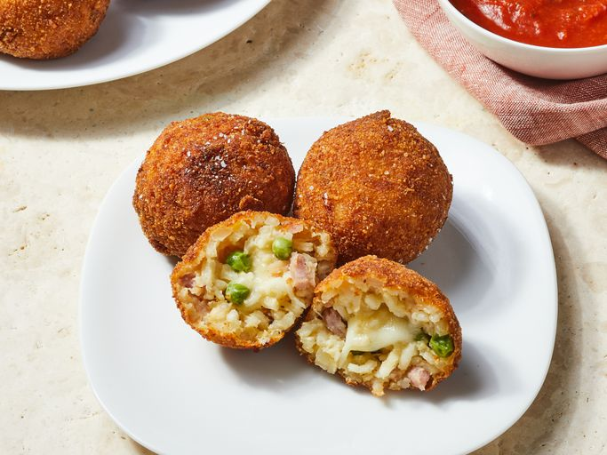

Arancini

Description
This arancini recipe is made with white wine risotto and features a gooey mozzarella center. These Italian rice
balls are fantastic for lunch or dinner and can be frozen.
Arancini Ingredients
- 1 tablespoon olive oil
- 1 small onion, finely chopped
- 1 clove garlic, crushed
- ½ cup dry white wine
- 2 ½ cups boiling chicken stock
- ½ cup frozen green peas
- 2 ounces finely chopped ham
- salt and pepper to taste
- ½ cup finely grated Parmesan cheese
- 2 large egg
- 1 tablespoon milk
- 4 ounces mozzarella cheese, cut into 3/4 inch cubes
- ½ cup all-purpose flour
- 1 cup dry bread crumbs
- 1 quart vegetable oil for frying, or as needed
How to Arancini Step-By-Step
- Gather all ingredients.
- Preheat the oven to 200 degrees F (95 degrees C).
- Heat 1 tablespoon olive oil in a large saucepan over medium heat. Add onion and garlic; cook and stir until onion is soft but not browned.
- Pour in rice; cook and stir until lightly toasted, about 2 minutes.
- Stir in wine; cook, stirring occasionally, until liquid has evaporated.
- Add hot chicken stock to rice, 1/3 cup at a time, stirring and cooking until liquid has evaporated before adding more.
- After all of the chicken stock has been added and absorbed, stir in peas and ham, then season with salt and pepper.
- Remove from heat and stir in Parmesan cheese. Transfer risotto to a large bowl and allow to cool slightly.
- Beat 1 egg in a small bowl; stir into risotto.
- Beat remaining egg with milk in the same small bowl. Place flour in a second bowl; place bread crumbs in a third bowl.
- For each ball, roll 2 tablespoons risotto into a ball. Press 1 mozzarella cube into the center and roll to enclose.
- Coat lightly with flour, dip into milk mixture, then roll in bread crumbs to coat.
- Heat 1 cup vegetable oil in a deep-fryer or large deep saucepan to 350 degrees F (175 degrees C).
- Working in batches, fry rice balls in hot oil until evenly golden, turning as needed.
- Drain on paper towel-lined plate and keep warm in the preheated oven.
Back to menu